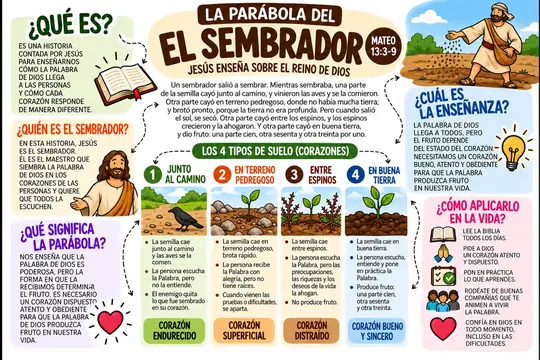
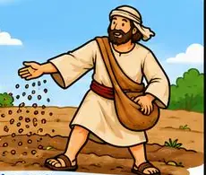
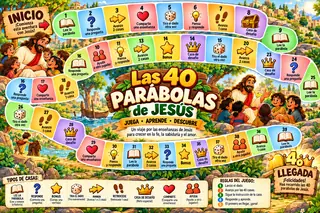

Descubre las 40 Parábolas de Jesús y comprende sus enseñanzas de una manera sencilla
Un material práctico para conocer, reflexionar y compartir las enseñanzas de Jesús en familia.

- ⚡ Acceso inmediato
- 🛡️ Garantía de 7 días
- 👨👩👧👦 Para toda la familia
Acceso digital inmediato
¿Alguna vez quisiste enseñar las historias de Jesús, pero no sabías cómo explicarlas de una manera sencilla?
Les pasa a muchas familias. Quizás te reconozcas en alguna de estas situaciones:
Para que compartir las enseñanzas de Jesús sea más sencillo y más cercano.
Por eso creamos Las 40 Parábolas de Jesús
Reunimos 40 parábolas y enseñanzas de Jesús en un material ilustrado que presenta cada una de manera simple y accesible, para leer, comprender y compartir en familia.
Cada página sigue el mismo camino: Lee → Entiende → Conversa → Practica.
40 enseñanzas. 40 oportunidades para acercarse a Jesús.
Así funciona cada enseñanza
Una página por enseñanza, con todo lo que necesitas para leer, entender, conversar y practicar con tus hijos.
- 1📖 La historia · ¿Qué es?La parábola o enseñanza, en palabras sencillas.
- 2📍 Referencia bíblicaLibro, capítulo y versículo.
- 3📜 Texto bíblicoLas palabras de Jesús en la página.
- 4👥 PersonajesQuiénes son y qué representa cada uno.
- 5🎨 Ilustraciones4 escenas que cuentan la enseñanza.
- 6💡 ¿Qué significa?El mensaje central de Jesús.
- 7❤️ ¿Cómo aplicarlo? · 🎯 DesafíoIdeas para vivirlo hoy y un reto práctico para hacer en familia.
Hojea el material
Así son las páginas que vas a recibir. Toca una página para verla completa.
Desliza para ver más →
¿Qué encontrarás?
Todo lo que trae el material, explicado en pocas palabras.
40 Parábolas de Jesús
Parábolas y enseñanzas ilustradas, cada una con su texto y su referencia bíblica.
Enseñanzas fáciles de comprender
Cada página cuenta la historia y explica su significado con palabras sencillas.
Momentos especiales en familia
Unos minutos para leer juntos y conversar sobre lo que aprendieron.
Reflexiones sobre la Palabra de Dios
El mensaje central de cada enseñanza, para pensar y conversar sin prisa.
Aplicaciones para la vida diaria
Ideas para aplicar cada enseñanza y un desafío sencillo para practicar hoy.
Acceso digital inmediato
Léelo en el celular, la tablet o la computadora, o imprímelo en formato A4.
Algunas de las parábolas incluidas
Toca una página para verla completa.
Algunas son parábolas y otras son comparaciones y enseñanzas que Jesús usó para explicar el Reino de Dios. Cada una trae su referencia bíblica.
Más que leer historias. Comprender sus enseñanzas.
“Quiero enseñar la Biblia, pero no sé cómo hacerlo de una manera sencilla.”
“Ahora tengo historias que puedo leer, comprender y compartir con mi familia.”
Un espacio de conexión, aprendizaje y reflexión, al ritmo de cada familia.
Convierte cada enseñanza en una experiencia
Imprime las cartas, recórtalas y úsenlas para conversar, jugar y recordar las enseñanzas de Jesús con tus hijos.
Jesús se presenta como el Buen Pastor que conoce, cuida y protege a sus ovejas.
Jesús nos conoce por nombre y cuida de nosotros.
Hoy, dedica un momento a hablar con Jesús en oración.

✂️ Listas para imprimir en casa y recortar por la línea punteada.
- Fáciles de imprimir
- Fáciles de usar
- Visuales y coloridas
- Ideales para niños
- Perfectas para conversar en familia
Repasen las enseñanzas jugando en familia
🎲 Juego de mesa: un tablero ilustrado para leer, responder, compartir y ayudarse mientras la familia juega. Listo para imprimir.
Elige la opción que mejor se adapta a ti
Pago único. Acceso digital inmediato.
- Acceso a Las 40 Parábolas de Jesús
- Formato digital
- Acceso inmediato
- Cartas ilustradas
- Juego de mesa familiar

- Acceso a Las 40 Parábolas de Jesús
- Formato digital
- Acceso inmediato
- Bono: cartas ilustradas para imprimir, recortar y jugar
- Bono: juego de mesa familiar: tablero ilustrado listo para imprimir
Lo que dicen las familias que ya comenzaron esta aventura
¡Me encantaron las parábolas! El material es muy lindo y fácil de aplicar. Mi hija lo entendió todo muy bien.
No tengo palabras para describir este material. Simplemente increíble.
Estoy seguro de que fue la mejor inversión que he hecho en la vida de mi hijo.
Preguntas frecuentes
¿Qué incluye Las 40 Parábolas de Jesús?+
¿En qué formato recibiré el material?+
¿Puedo acceder desde mi celular?+
¿Recibo el acceso inmediatamente?+
¿Cómo recibiré mi acceso?+
¿Es para leer en familia?+
¿Qué diferencia hay entre las dos opciones?+
¿Puedo imprimirlo?+
¿Las cartas y el juego llegan impresos?+
¿Necesito tener conocimientos de la Biblia?+
¿Cuánto tiempo necesito?+
¿Existe garantía?+
¿Ya resolviste tus dudas?
Tu compra está protegida
Si después de conocer el material consideras que no es para ti, podrás solicitar el reembolso dentro de los 7 días posteriores a tu compra.
Empieza hoy a descubrir las enseñanzas de Jesús
Convierte momentos de lectura en momentos de reflexión, aprendizaje y conexión con la fe.
Acceso digital inmediato • Pago seguro • Garantía de 7 días